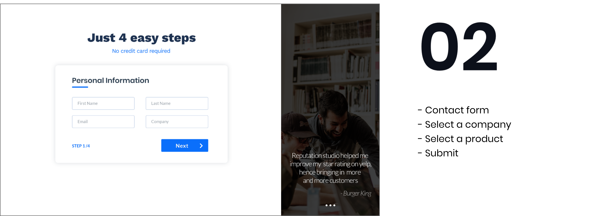
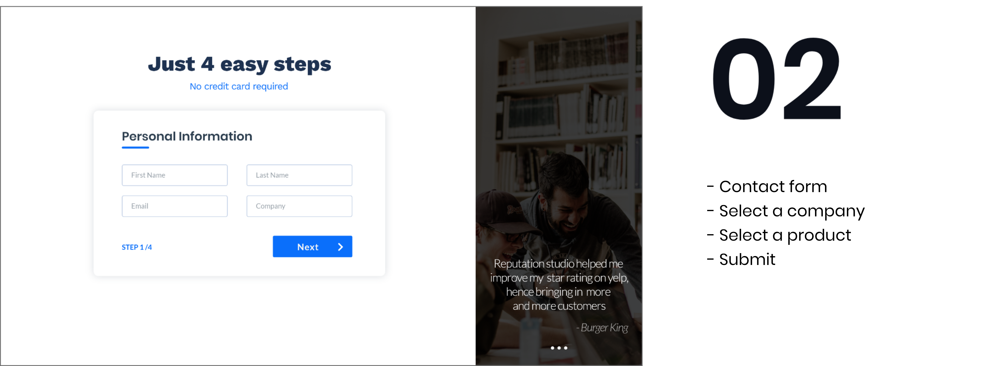

Exploring ideas
The interview was beneficial as it helped me and the team understand the fundamental needs that a user looks for in a free trial as well as it gave me a brief idea about the features that we need to include in the free trial. Sketching exercise helped me during a rapid brainstorming process where the main goal was to identify ways to implement a feature and also to map a user's journey throughout the free trial.
Flow Mapping

Wireframing


 
